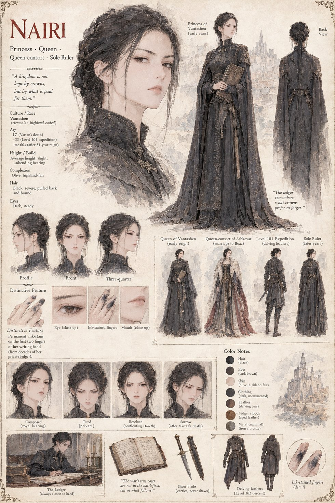

Nairi
Princess, later Queen of Vantashen · Queen-consort of Ashkevar · Sole Ruler
Vartaz's sister, seventeen when he dies and queen of Vantashen not long after. She proposes her own marriage to Boaz of Ashkevar across a treaty table in a ruined border town, and rules both crowns eventually, outliving every other claimant on either side. Years later she leads twelve delvers back down to Level 101 and is handed her brother's recovered armor by the Observer without a word of explanation — proof enough to correct the entire official cause of the war. She keeps it in her private ledger instead, deciding, again and again for the rest of her reign, that an exhausted peace is worth more than an uncomfortable truth. Permanent ink stains the first two fingers of her writing hand.
“A kingdom is not kept by crowns, but by what is paid for them.”
Appears In

Related Subjects


Related Records

Nairi begins the private ledger.

The Observer hands Nairi the armor.